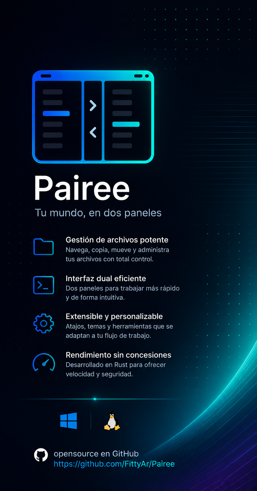

Interfaz de Doble Panel
El clásico diseño de paneles paralelos para moverte y gestionar directorios de manera extremadamente ágil y sin perder contexto.
Un gestor de archivos para terminal moderno, multiplataforma y altamente modular. Inspirado en Norton Commander, desarrollado en Rust con Ratatui y Tokio.
Pairee combina la velocidad de la línea de comandos con la comodidad visual de un gestor de archivos interactivo.
El clásico diseño de paneles paralelos para moverte y gestionar directorios de manera extremadamente ágil y sin perder contexto.
Copia, mueve o elimina archivos en segundo plano gracias al runtime de Tokio. La interfaz se mantiene 100% fluida en todo momento.
Perfiles integrados para controles de Norton Clásico, Vim y navegación moderna. Elige el estilo que mejor se adapte a ti.
Motor dinámico para temas visuales (Slate, Blue, etc.) y soporte centralizado multilingüe para inglés y español.
Búsqueda avanzada por nombre/contenido, visor de atributos detallado, comparación de directorios y administrador de procesos del sistema.
Detecta tu método de instalación original (soporta hasta 13 vías distintas) y actualiza de manera segura validando firmas SHA-256.
Explora las capturas de la interfaz y las diferentes utilidades integradas en Pairee.


Puedes descargar y compilar Pairee ejecutando este instalador directo en tu terminal.
Pairee une la nostalgia del software TUI de finales del siglo XX con la seguridad de memoria, el paralelismo sin esfuerzo y la extrema robustez de Rust.
No necesitas salir de tu consola para realizar comparaciones avanzadas de carpetas, matar procesos o transferir gigabytes de información en hilos secundarios. Es el aliado definitivo para sysadmins, desarrolladores e ingenieros amantes de la consola.
Explorar el Repositorio ↗